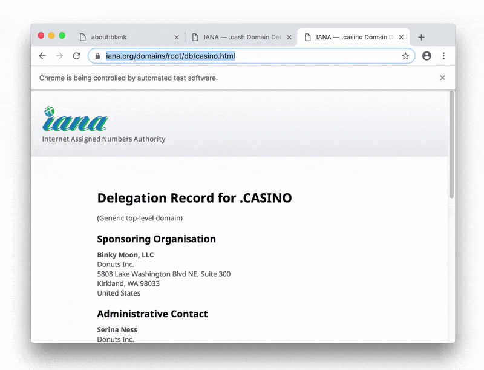

Getting Started
The Apify SDK requires Node.js 8 or later.
Local stand-alone usage
Add Apify SDK to any Node.js project by running:
npm install apify --save
Run the following example to perform a recursive crawl of a website using Puppeteer. For more examples showcasing various features of the Apify SDK, see the Examples section of the documentation.
const Apify = require('apify');
Apify.main(async () => {
const requestQueue = await Apify.openRequestQueue();
await requestQueue.addRequest({ url: 'https://www.iana.org/' });
const pseudoUrls = [new Apify.PseudoUrl('https://www.iana.org/[.*]')];
const crawler = new Apify.PuppeteerCrawler({
requestQueue,
handlePageFunction: async ({ request, page }) => {
const title = await page.title();
console.log(`Title of ${request.url}: ${title}`);
await Apify.utils.puppeteer.enqueueLinks(page, 'a', pseudoUrls, requestQueue);
},
maxRequestsPerCrawl: 100,
maxConcurrency: 10,
});
await crawler.run();
});
When you run the example, you should see Apify SDK automating a Chrome browser.

By default, Apify SDK stores data to
./apify_storage in the current working directory.
You can override this behavior by setting either the
APIFY_LOCAL_STORAGE_DIR or APIFY_TOKEN environment variable.
For details, see Environment variables
and Data storage.
Local usage with Apify command-line interface (CLI)
To avoid the need to set the environment variables manually, to create a boilerplate of your project, and to enable pushing and running your code on the Apify Cloud, you can use the Apify command-line interface (CLI) tool.
Install the CLI by running:
npm -g install apify-cli
You might need to run the above command with sudo, depending on how crazy your configuration is.
Now create a boilerplate of your new web crawling project by running:
apify create my-hello-world
The CLI will prompt you to select a project boilerplate template - just pick "Hello world".
The tool will create a directory called my-hello-world with a Node.js project files.
You can run the project as follows:
cd my-hello-world
apify run
By default, the crawling data will be stored in a local directory at ./apify_storage.
For example, the input JSON file for the actor is expected to be in the default key-value store
in ./apify_storage/key_value_stores/default/INPUT.json.
Now you can easily deploy your code to the Apify Cloud by running:
apify login
apify push
Your script will be uploaded to the Apify Cloud and built there so that it can be run. For more information, view the Apify CLI and Apify Actor documentation.
Usage on the Apify Cloud
You can also develop your web scraping project in an online code editor directly on the Apify Cloud. You'll need to have an Apify Account. Go to Actors, page in the app, click Create new and then go to the Source tab and start writing your code or paste one of the examples from the Examples section.
For more information, view the Apify actors quick start guide.